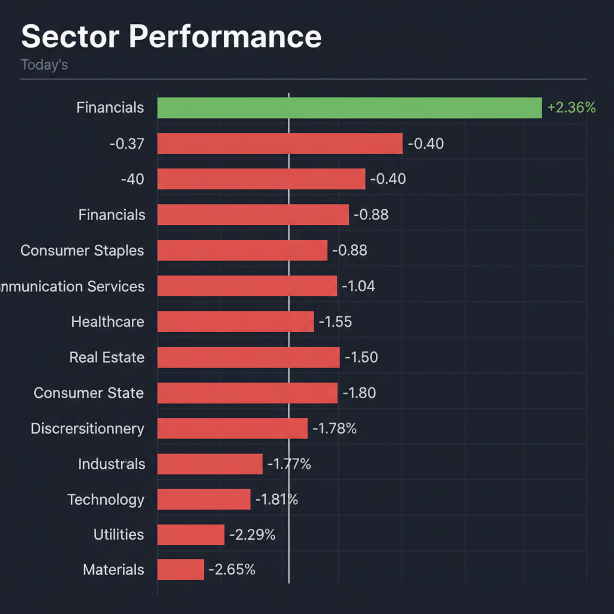
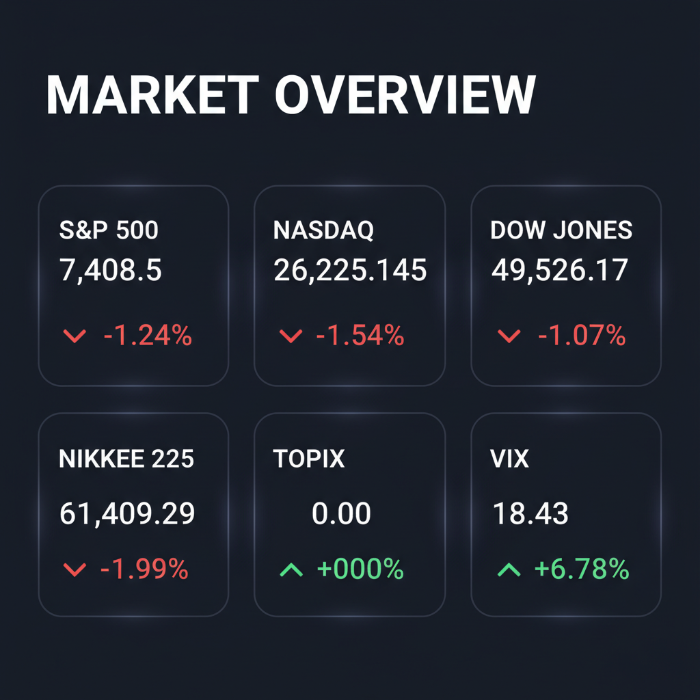

Daily Investment Report - 2026-05-16
Generated: 2026/5/16 7:29:04


本日の投資チームミーティングの分析結果を統合した、最新の投資家向けレポートをお届けします。
1. エグゼクティブサマリー
現在の市場は、30年物国債利回りの5.1%突破と原油価格の急騰により、高金利とインフレ再燃の「複合リスク」に直面する警戒局面にあります。
AI関連など高バリュエーション銘柄からの資金流出が顕著であり、全体としては現金比率を高めた防御的なポートフォリオ構築が急務です。
マクロの逆風下においては指数連動型の投資を避け、キャッシュフロー創出力と独自の成長ストーリーを持つ中小型株への選別投資が鍵となります。
2. 注目銘柄リスト
強気（買い推奨）
- トリドールホールディングス（3397） [約3,000億円の中型株]: AI導入により従業員の離職率を12.9%低下させており、構造的な採用・教育コストの削減と持続的な営業利益率の向上が期待できる優良銘柄です。
- アルカン・リソーシズ（ティッカー未定） [中小型株]: 好決算にもかかわらず市場の期待値とのギャップで売られましたが、インフレ環境下で実物資産の強みを発揮し、バリュエーションの安全マージンが拡大しています。
- トレンドマイクロ（4704） [大型寄りの中型株]: 堅調なサイバーセキュリティ需要を背景に好決算を発表し、下落相場でも逆行高を演じるなど、高い自己資本と安定したサブスクリプション収益が金利上昇期の強力な盾となります。
中立（様子見）
- Datavault AI（ティッカー未定） [超小型株]: AIデータインフラの莫大な潜在需要を持つ一方、高金利下における赤字小型株の資金調達コスト急騰リスクが高いため、テクニカルな底打ちシグナルの確認が必要です。
- TJX Companies（TJX） [大型株]: 優れた不況耐性を持つ優良ディスカウント小売ですが、マクロの消費底割れリスクやチャート上の明確なサポートラインが未確認のため、現状は打診買いを控えるべきです。
- 日産自動車（7201） [大型株]: 決算での損失縮小により一時的に好感されましたが、資本集約的で構造的なフリーキャッシュフロー創出力に懸念があり、割安の罠（バリュートラップ）となる可能性があります。
弱気（警戒）
- ニデック（6594） [大型株]: 1000件超の品質不正と1397億円に及ぶ会計影響により、コーポレートガバナンスが完全に崩壊しており、下値の底が見えない極めて危険な状態です。
- Cerebras Systems（ティッカー未定） [中大型IPO]: 驚異的なIPOデビューを果たしたものの、金利5.1%環境下での過度な期待先行はリスクが高く、ロックアップ解除後の激しい売り圧力が警戒されます。
- SUBARU（7270） [大型株]: 米国での関税リスクとEV関連の損失計上により最終利益が70%余り減少しており、業績トレンドの下落が明白です。
3. セクター推奨ランキング
原油高とインフレ再燃に対する直接的なヘッジとなり、本日の相場全面安の中でも唯一テクニカルな資金流入と強いモメンタムを維持しています。
- 2位: サイバーセキュリティ・BtoB向けAI SaaS
日本市場特有のガバナンス強化や人手不足解消（AI実装）のための不可欠なインフラであり、マクロ環境に左右されにくい高マージンな収益基盤を持っています。
金利上昇による景気後退リスクが高まる中、消費者の節約志向を取り込める価格決定力と、安定したキャッシュフローが再評価されます。
- 4位（回避推奨）: 高バリュエーションのテクノロジー・不動産・公益事業
長期金利が5%を超える環境下では、ハイテク株の高いPERは正当化されず、不動産や公益セクターの配当利回りの魅力も債券に対して完全に失われています。
4. 今週の注目イベント
- 数日中: トランプ大統領による「イラン産原油を購入する中国企業への制裁解除」の最終決定（原油市場の需給に直結）
- 近日中: 新FRB議長ケビン・ウォーシュ体制下での金利見通しに関する発言および関連インフレ指標の発表
- 随時: アラグチ外相の発言を受けた米国・イラン間の外交交渉、および中東情勢の動向
5. リスク要因
- 金利上昇と信用収縮リスク: 30年債利回りが5.1%を超える環境が定着し、赤字グロース企業の資金調達コストが跳ね上がることで、株式市場全体のマルチプル・コントラクション（PER低下）が加速するリスク。
- 地政学・エネルギー市場の乱高下: 米国の中国に対するイラン原油制裁が解除されれば原油価格が急落する一方、中東の緊張が悪化すれば原油が急騰するという、双方向の極端なボラティリティリスク。
- ガバナンス不全の波及: ニデックの大規模な品質・会計不正が、海外機関投資家からの日本株全体へのガバナンス不信感（ESGリスク）に繋がり、急激な資金流出を引き起こすリスク。
6. アクションアイテム
- 現金比率の引き上げ: 株式ポートフォリオの現金比率を平時より高い30〜40%水準まで意図的に引き上げ、相場のボラティリティ拡大に備えてください。
- 利益確定とヘッジの実行: 利益の出ている高PERのAI・半導体関連株は一部利益確定（トリム）を行い、VIXのコールオプションや、QQQ・SMHのプットオプション購入によるダウンサイド・プロテクションを構築してください。
- 厳格なストップロスの設定: 唯一モメンタムのあるエネルギーセクターなど、既存の買いポジションには直近の押し目安値や50日移動平均線を基準に、感情を排したストップロスを設定してください。
- 新規の買いエントリーの保留: 大型ハイテク株の押し目買いや、落ちてくるナイフ状態の小型株の逆張りは避け、トリドールやアルカン・リソーシズといった独自の成長・割安要因を持つ中小型株を監視リストに入れ、明確な底打ちシグナルを待ってください。